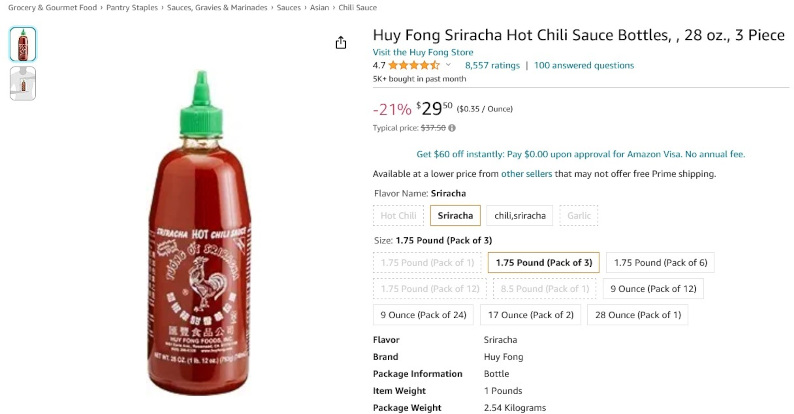

In case you did not know, since April 2022 it has become much more difficult to purchase Sriracha hot sauce around the world, including in the United States. (Click for more)
Yes. It is very real.
Here is a screenshot of a bottle currently available for 30$ (at a discount)[1]:
There are currently other brands of "Sriracha" hot sauce that are still widely available for sale[3][4]. As different brands use different kinds of peppers as well as source from different farmers, these brands are not similarly impacted from the Shortage. Some brands such as Tobasco[5] have experienced an increase in sales as a result. In my opinion, though, they just aren't the same.
Though there is a shortage, the impacted Sriracha brand is not impossible to find. Especially in recent months, some regions are now seeing bottles in-stock at stores, though often with a per-person purchase limit.
One of the causes of the shortage is hotter, drier weather potentially related to overall rising world temperatures[6].
Doing your part to minimize your impact on the environment can help to ensure Sriracha for our future and our children's future[7].